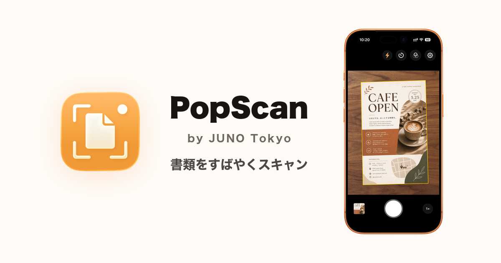

Press Release
シンプルさを追求した iPhone 用書類スキャンアプリ「PopScan」App Store にて配信開始
無制限プランを無料開放するリリース記念キャンペーンを 6 月 19 日まで実施。
書類をすばやくスキャンして、写真ライブラリに保存。毎日使えるシンプルなアプリ。
無制限プランを無料開放するリリース記念キャンペーンを 6 月 19 日まで実施。

リリース概要
東京を拠点とするアプリ開発スタジオ JUNO Tokyo（代表: 岡元 淳）は、iPhone 向け書類スキャンアプリ「PopScan（ポップスキャン）」を 2026 年 5 月 22 日（金）に App Store でリリースしました。あわせて、リリースを記念して有料の「無制限プラン」を全ユーザーに無料開放するキャンペーンを 2026 年 6 月 19 日（金）まで実施しています。
PopScan とは
PopScan は「書類を手軽に撮影して写真として残す」ことにフォーカスした、シンプルな iPhone 書類スキャンアプリです。カメラを書類に向けると四隅を自動検出してトリミング・補正し、写真ライブラリへ JPEG として直接保存します。アカウント不要・サブスク不要。日常づかいに必要な機能だけに絞り、誰でも使えることを目指して開発しました。
主な機能
- カメラを向けるだけで自動検出・トリミング
- フラッシュ、自動シャッターでブレなく撮影
- 1x / 2x レンズ切り替え（小さな書類にも対応）
- トリミング編集で四隅を細かく調整
- 回転・フィルター・見やすさ調整による画像補正
- 保存画像のサイズを選択可能
- 写真ライブラリにある写真もクロップ可能
- 保存先はいつもの写真ライブラリ — iOS 標準機能と連携
開発の背景
従来のスキャンアプリは、独自ライブラリ・PDF・OCR など豊富な機能を備え、ビジネス用途や本格的なドキュメント管理に価値を提供していますが、日常づかいには機能の複雑さが重く感じることもあります。一方で、Microsoft Lens のようなシンプルなスキャンアプリは提供が終了しており、選択肢が限られている状況です。「メモを記録したい」「領収書を整理したい」「子供の絵を残したい」といった日常の用途に使いやすいアプリが必要と感じ、PopScan を開発しました。
PopScan の特徴
PopScan は、標準カメラの感覚で使える快適な操作性を備えています。起動してシャッターを押し、保存まで数秒で完了します。撮影後に、トリミングや回転、画像調整などで仕上げることもできます。また、写真ライブラリにある写真に対しても、書類の検出・トリミング・調整を行えます。操作が複雑になるような機能は意図的に搭載せず、写真の編集や管理は iOS 標準機能に任せることで、普段どおりの操作感を保てます。広告は掲載せず、プライバシーにも配慮しています。
価格・提供条件
無料プランでは、普段づかいに十分な利用枠があり、徐々に回復するため、毎日お使いいただけます。しっかり使いたい方向けには、買い切りの無制限プランで「一度買えばずっと使える」を実現しました。サブスクとは別軸の、ユーザーにとって受け入れやすい構成として位置づけています。
| プラン | 価格 | 内容 |
|---|---|---|
| アプリ本体 | 無料 | ダウンロード自由 |
| 無料プラン | ¥0 | 普段づかいに十分な利用枠あり。徐々に回復します |
| 無制限プラン | ¥600 | App 内課金（非消耗型・買い切り） |
リリース記念キャンペーン実施中
2026 年 6 月 19 日（金）まで、全ユーザーに「無制限プラン」を無料開放しています（4 週間限定）。
プライバシー
- 撮影した写真・画像処理結果は端末内でのみ処理。サーバには送信しません
- トラッキングなし。第三者トラッキング SDK 不使用
- 匿名の利用状況・診断データ（アプリ起動 / スキャン成功 / 機能利用 / 非コンテンツのエラー状態など）を品質改善のために送信しますが、写真・画像内容・OCR / 解析結果・ユーザーアカウント・広告 ID は一切含みません
- 詳細: https://juno.tokyo/popscan/#privacy
動作環境
iPhone（iOS 17 以上）
ダウンロード
開発者について
JUNO Tokyo は東京を拠点とするアプリ開発スタジオです。
「テクノロジーは日々の生活にどんな付加価値を与えられるか」を問いながら身の回りを観察するなかで、最も身近にあるスマートフォンのカメラで書類を画像として残す、というシンプルな着想にたどり着きました。書類スキャンアプリは数多くありますが、本当にシンプルで洗練されたものは見当たらないと感じていました。「日常で本当に欠かせないものは何か」を考え抜き、多くの人にとって不要な機能を思い切って削ぎ落とすことで、必要なことだけに集中できるアプリに仕上げました。
関連リンク
- PopScan 公式ページ: https://juno.tokyo/popscan/
- プレスキット（アイコン・スクリーンショット・各種テキスト一式 / Dropbox）: リンク
- PopScan 開発ノート: https://note.com/juno_tokyo
本件に関するお問い合わせ
JUNO Tokyo
| 項目 | 内容 |
|---|---|
| 代表 | 岡元 淳（おかもと じゅん） |
| 所在地 | 東京 |
| contact@juno.tokyo |